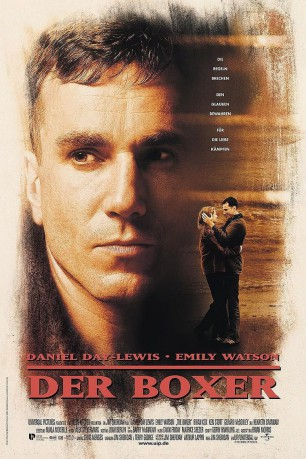

#10075 Der Boxer
 
 IMDB-Wertung: 7.1 / 10
IMDB-Wertung: 7.1 / 10  Metascore: 75
Metascore: 75 
Der ehemalige IRA-Aktivist Danny Flynn kehrt nach 14 Jahren Gefängnis nach Belfast zurück. Hier findet er den alten Konflikt zwischen der Republik und Nordirland, aber auch seine alte Liebe Maggie wieder, deren Leben auch vom Gefängnis bestimmt war. Nachdem Danny den Kontakt mit ihr abgebrochen hatte, heiratete sie seinen besten Freund, der jedoch auch im Gefängnis sitzt und Treue von ihr erwartet – keine leichte Rolle. Danny hat es nicht leicht in der Welt, einzig im Boxring weiß er, was er kann und will sich beweisen. Ein Kampf für sein Leben und die Liebe seines Lebens.
Jahr: 1997
Dauer: 113 Minuten
FSK: 12
Land: USA Studio: MCA/Universal PicturesTonspuren:
Untertitel:
Auflösung: 1080p (1920x1040) Größe: 7823 MB
Genre: Drama, Liebe, Sport
Regisseur: Jim Sheridan
Drehbuch: Jim Sheridan, Terry George
Soundtrack: Gavin Friday, Maurice Seezer
Darsteller:
 Daniel Day-Lewis als Danny Flynn
Daniel Day-Lewis als Danny Flynn- Carol Moore als Wedding Guest
 Emily Watson als Maggie
Emily Watson als Maggie Gerard McSorley als Harry
Gerard McSorley als Harry Brian Cox als Joe Hamill
Brian Cox als Joe Hamill David Hayman als Joe Hamill's Aide
David Hayman als Joe Hamill's Aide- Ciarán Fitzgerald als Liam
 Ken Stott als Ike Weir
Ken Stott als Ike Weir Kenneth Cranham als Matt MaGuire
Kenneth Cranham als Matt MaGuire- Paul Ronan als Eddie's Cornerman
 Liam Carney als Mr. Walsh
Liam Carney als Mr. Walsh- Des Braiden als Mr. Orr
- Brian Milligan als Ned
- Kirsten Sheridan als Girl With Drinks
 Ian McElhinney als Reggie Bell
Ian McElhinney als Reggie Bell Jer O'Leary als Timekeeper - London Fight
Jer O'Leary als Timekeeper - London Fight- Tom Bell als Joe MaGuire's father (uncredited)
- Tony Blair als Himself (archive sound) (uncredited)
 Bill Clinton als Himself (archive sound) (uncredited)
Bill Clinton als Himself (archive sound) (uncredited)- Tony Doyle als (uncredited)
- Tania Grier als Louise (uncredited)
- Daragh Donnelly als Prison Officer
- Frank Coughlan als Prison Officer
- Sean Kearns als Prison Officer
- Lorraine Pilkington als Bride
- Niall Shanahan als Groom
- John Wall als Priest
- Maria McDermottroe als Betty
- Kate Perry als Wedding Guest
- Andrea Irvine als Wedding Guest
- Joan McGarry als Wedding Guest
- Theresa McComb als Wedding Guest
- Catherine Dunne als Wedding Guest
- Kerrie Duggan als Wedding Guest
- Sharon Dunne als Wedding Guest
- Derbhla McClelland als Wedding Guest
- Oliver Maguire als Prison Governor
- David McBlain als Sean
- Sandra Corbally als Cake Decorator
- Eleanor Methven als Patsy
- Tess Sheridan als Pianist
- Paul Sheridan als IRA Man
- John Sheridan als IRA Man
- Pat Mulryan als IRA Man
- Peter O'Donoghue als IRA Man
- Martin Dunne als IRA Man
- Tommy O'Neill als IRA Man
- Maurice Henry als Liam's Friend
- Josie Doherty als Singer
- Joseph Rea als Agnes' Son
Datei: X:\1997\Boxer, Der (1997, FSK12, 1920x1040).mkv seit 27.11.2018
Festplatte: HD 1996-2002
 Es gibt insgesamt 83 Filme in der Gruppe '1997'
Es gibt insgesamt 83 Filme in der Gruppe '1997'